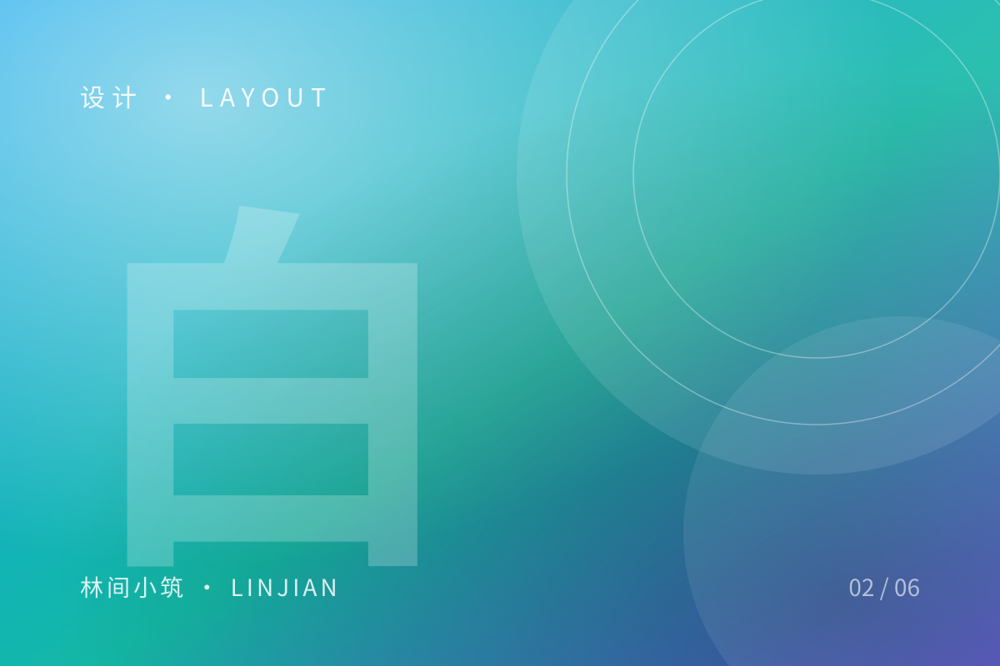

留白的力量：从排版说起

刚做前端那几年，我总担心页面上「空」着的地方浪费了空间。于是导航栏塞满入口，卡片里堆满信息，段落之间只留 8px。结果是信息更多了，可读性却更差了。
留白不是空白
留白是一种分组手段。元素之间的距离，直接告诉读者「谁和谁是一伙的」。
- 标题和正文之间留得少，它们就是一个整体
- 两篇文章之间留得多，读者就知道该切换注意力了
- 卡片内边距大于卡片间距，卡片才会有「容器感」
一个简单的比例
我常用的节奏是 8 : 16 : 32：组件内部 8，组件之间 16，区块之间 32。不需要严格执行，但要有层级差异。
.section { padding-block: 32px; }
.card { padding: 16px; }
.card + .card { margin-top: 16px; }
.title { margin-bottom: 8px; }舍得
最难的不是加法，是减法。一行说明文字如果对理解没有帮助，删掉它；一个图标如果只是装饰，删掉它；一段动效如果让人等待，删掉它。
界面变安静之后，真正重要的东西才会被看见。